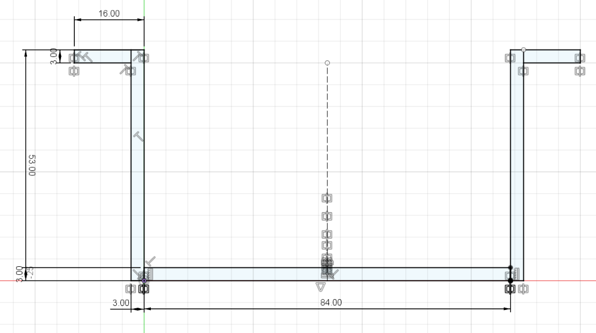
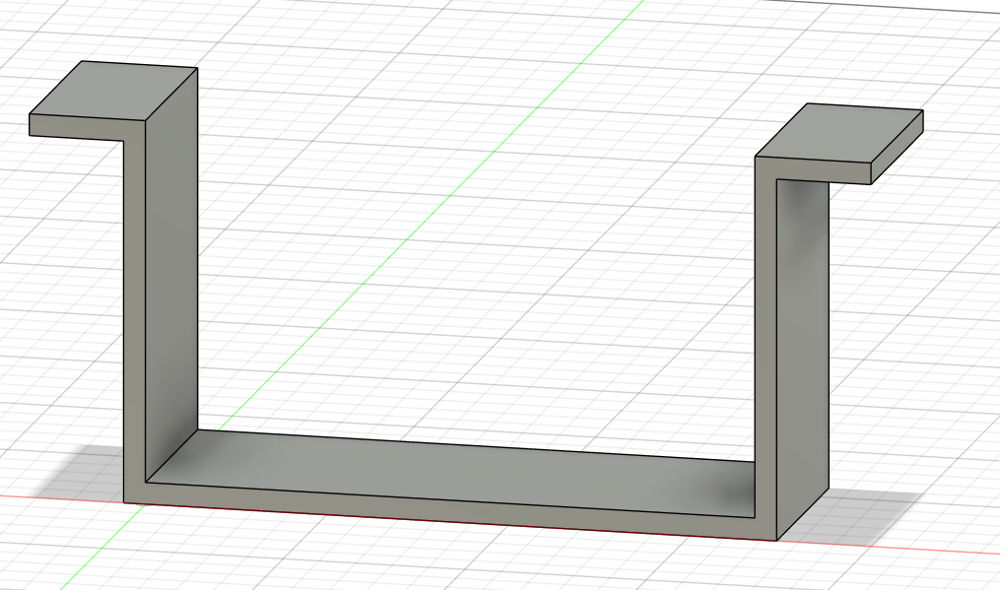
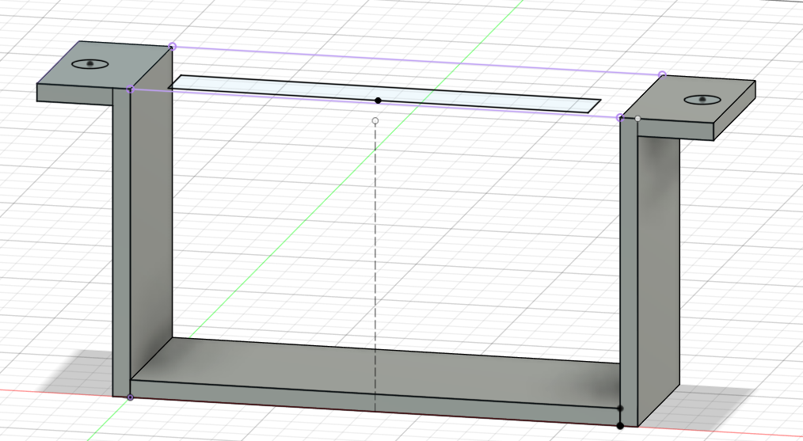
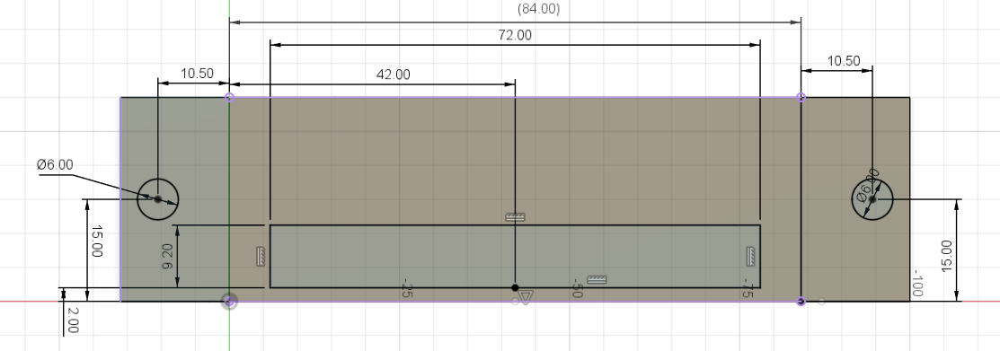
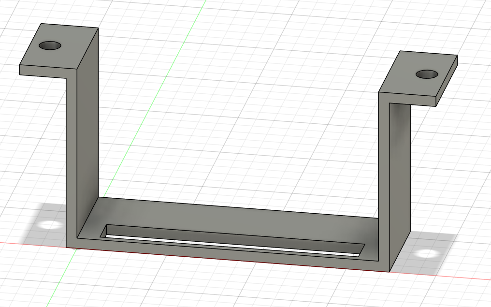
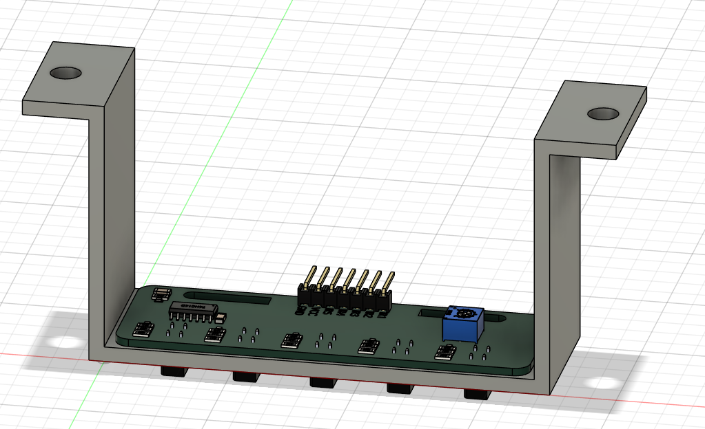
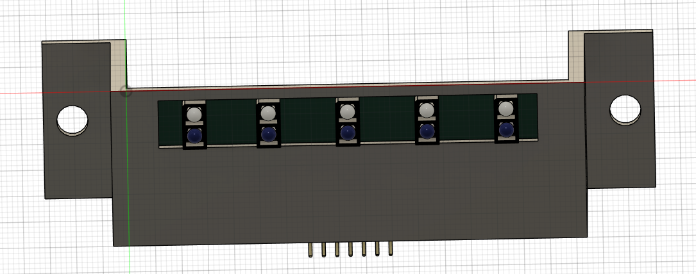

Multi-Step Modeling Exercise | Fusion 360
Design and model a custom mounting bracket for a 5-channel infrared (IR) line-following sensor array. This real-world part will be used on autonomous robots and requires precise dimensioning, proper constraints, and multi-plane modeling techniques.
Total Points: 100 | Time Estimate: 50-75 minutes
Here are reference images showing the completed mount from different perspectives. Use these to verify your work as you progress through the challenge.

This is your target for Part 1. Note the 84mm width, 53mm height, and 3mm wall thicknesses.





The sensor board should sit flat on the flanges with mounting holes aligned perfectly.

The IR sensors and pin headers should face downward into the U-channel cavity with proper clearance.
These images show the final product, but don't reveal the "intentional error" dimension. Use them to check:
You'll still need to measure the actual sensor component to find the correct hole spacing!
IR_Sensor_MountUsing the reference dimensions provided, create the U-channel base profile:
| Feature | Dimension | Notes |
|---|---|---|
| Overall Width | 84.00 mm | Total width of mount |
| Overall Height | 53.00 mm | From base to top of flanges |
| Base Thickness | 3.00 mm | Bottom platform thickness |
| Wall Thickness | 3.00 mm | Side wall thickness |
| Top Flange Width | 16.00 mm | Width of mounting flanges |
70 Points - Base mount modeled and extruded correctly, dimensions mostly accurate
75 Points - All of the above + sketch is fully constrained AND all dimensions are labeled
Create mounting holes for securing the IR sensor board:
| Feature | Dimension | Notes |
|---|---|---|
| Hole Diameter | Ø 6.00 mm | Size for M5 hardware clearance |
| Edge Distance | 15.00 mm | From hole center to mount edge |
| Hole Spacing | 72.00 mm | Center-to-center distance between holes |
80 Points - Mounting holes created and cut through the flanges
85 Points - All of the above + hole sketch is fully constrained AND dimensioned
Use joints/constraints to properly mount the sensor to your bracket:
At this stage, you may notice the sensor does NOT fit properly. The holes might not align, or there's interference. This is intentional! You'll need to identify and fix the dimensional error in Part 4.
90 Points - IR sensor inserted and constrained to the mount (even if fit is imperfect)
If the sensor doesn't fit properly, there's likely a dimensional error in your hole spacing or edge distance.
Common issues to check:
The secret to achieving full points (30/30):
Hint: The actual sensor hole spacing is likely NOT 72.00 mm. Use the Inspect → Measure tool to find the true distance!
3 Points - Dimensional error identified and corrected. Sensor fits perfectly with proper constraints.
| Points | Achievement | Criteria |
|---|---|---|
| 21 pts | Part 1: Base Mount Complete |
• U-channel base profile drawn • First extrusion (30mm) completed • Overall dimensions mostly accurate • Geometry is recognizable and functional |
| +1.5 pts | Part 1 Bonus: Fully Constrained Base |
• First sketch is fully constrained (black lines) • All critical dimensions are labeled and visible • Mirror geometry properly applied Cumulative: 22.5/30 points |
| +3 pts | Part 2: Mounting Holes Added |
• Second sketch created on flange surface • Holes cut through mount using "All" extrusion • Holes are positioned and sized reasonably Cumulative: 24-25.5/30 points |
| +1.5 pts | Part 2 Bonus: Fully Constrained Holes |
• Second sketch is fully constrained • Hole dimensions are labeled • Proper geometric constraints used Cumulative: 25.5-27/30 points |
| +2.5 pts | Part 3: Sensor Assembly |
• IR sensor component inserted • Sensor is constrained/jointed to mount • Assembly is stable (even if fit isn't perfect) Cumulative: 26.5-29.5/30 points |
| +3 pts | Part 4: Perfect Fit - Design Iteration |
• Dimensional error identified • Correct dimension updated in Sketch 2 • Sensor fits perfectly with hole alignment • No interference or clearance issues • Demonstrates design iteration skills TOTAL: 30/30 points |
LastName_IR_Sensor_Mount.f3dBy completing this challenge, you will demonstrate: